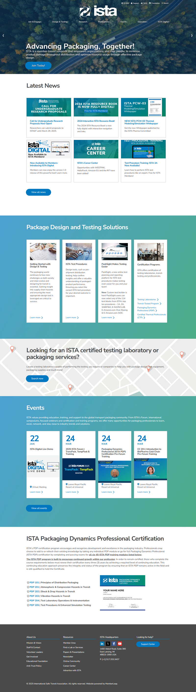
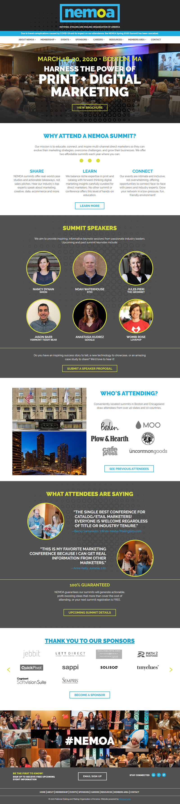
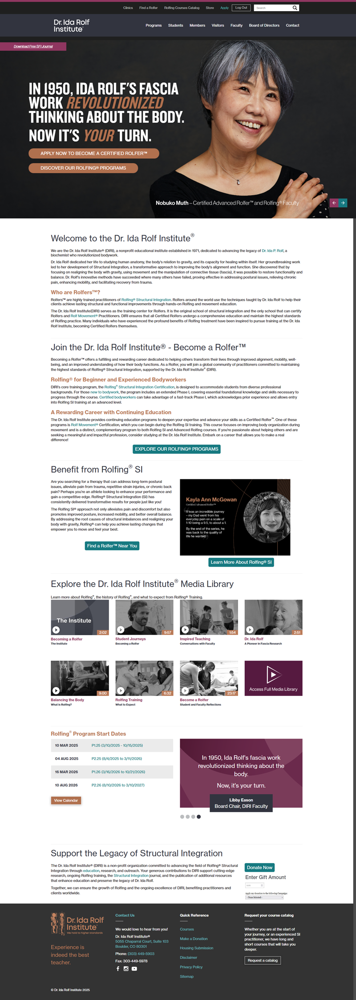
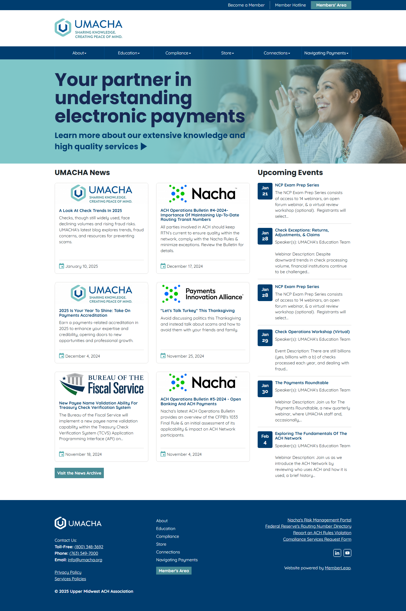
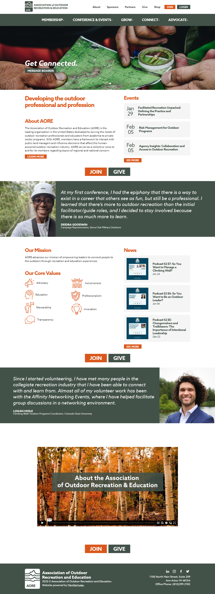
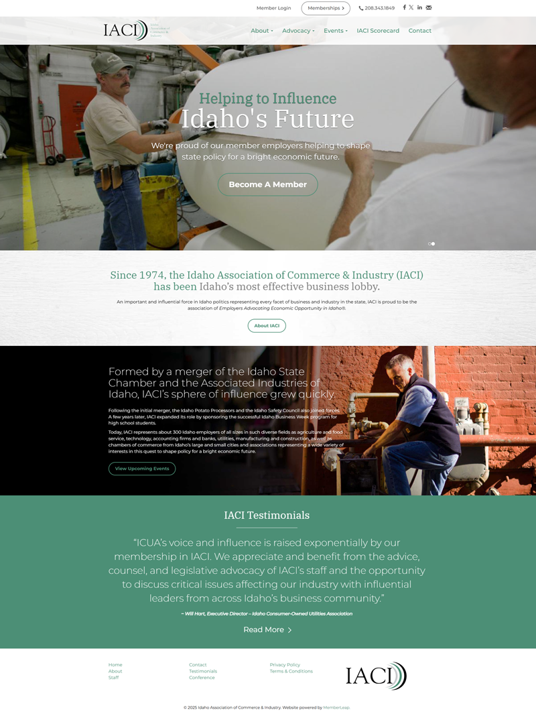
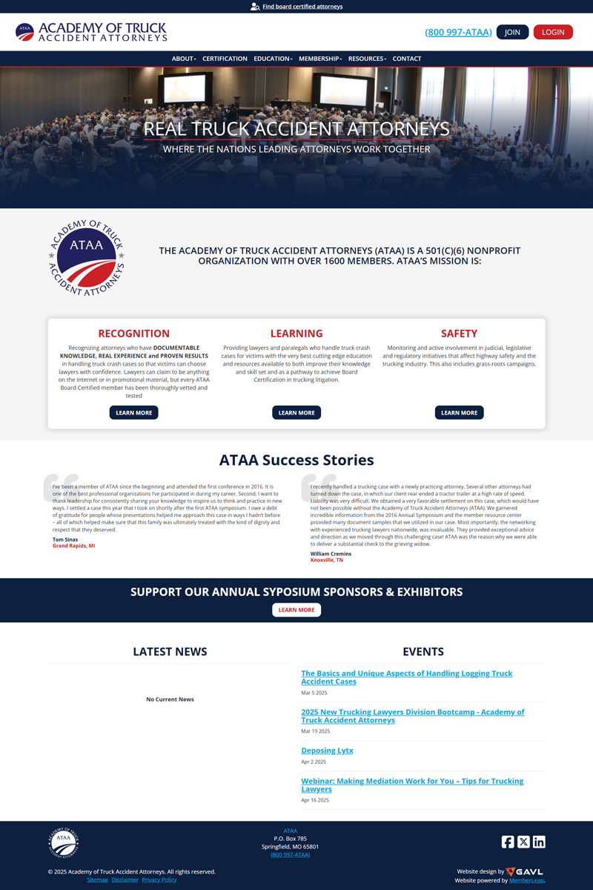

Web Development
-

The International Safe Transit Association was looking to to elevate their web presence to reflect their status as a leading trade organization for shipped packaging. The resulting website is as informative as it is a delight to look at.
View ISTA website -

NEMOA's member companies are catalogers, retailers, e-marketers, and suppliers. With this iteration of their website, they aimed to draw attention to their annual summit.
View NEMOA website -

The Dr. Ida Rolf Institute is a nonprofit educational institution that teaches practitioners bodywork through structural integration. Their website showcases a diverse set of features for its visitors that are tied together with a peaceful aesthetic.
View Dr. Ida Rolf website -

Partnering with financial institutions to clarify the complexities of electronic payments, UMACHA needed a website that converted their expertise through a calm and reassuring design.
View UMACHA website -

The Association of Outdoor Recreation and Education (AORE) is the leading organization in the United States dedicated to serving the needs of outdoor recreation professionals and educators from academia to private sector programs.
View AORE website -

IACI needed a website that positioned them as the premier representational organization for potato processors in Idaho, and to work to develop, implement and retain policies and initiatives that will create the most attractive climate in the nation for potato processors.
View IACI website -

The Academy of Truck Accident Attorneys seeks to separate the great lawyers from the great marketers. They needed a website that was professional and feature packed without alienating a user base that can be easily overwhelmed by technology.
View ATAA website